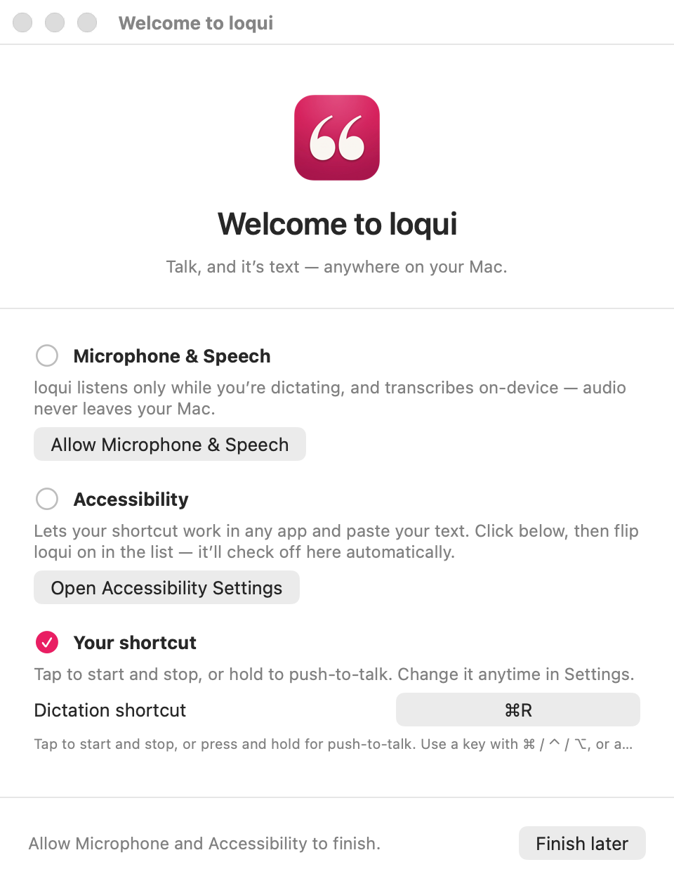
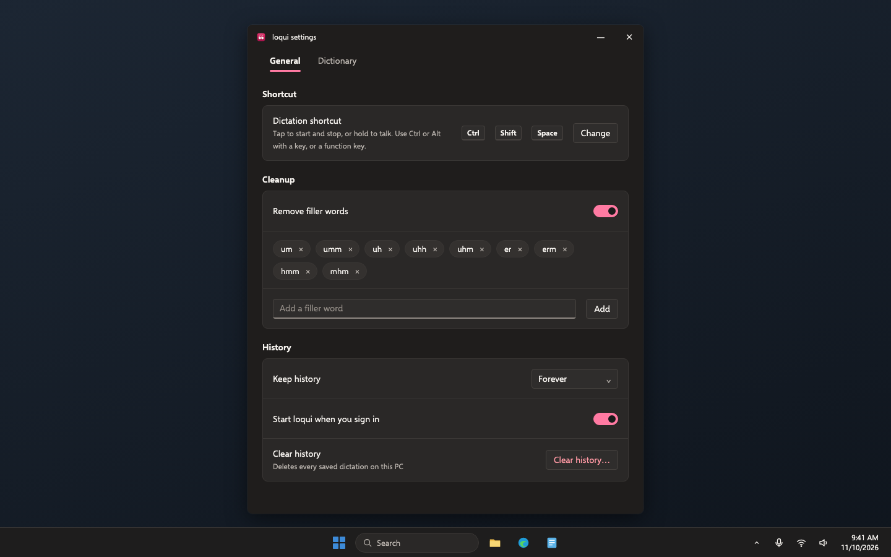
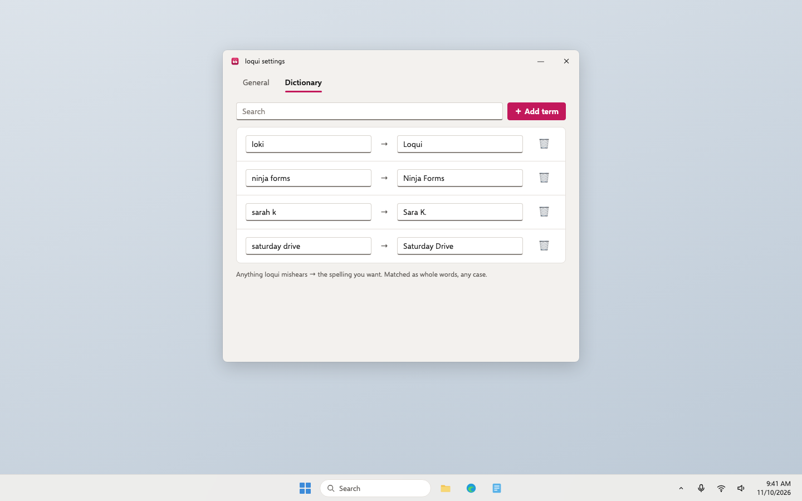
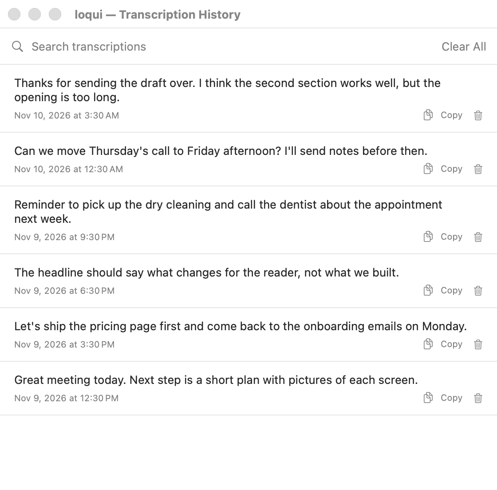
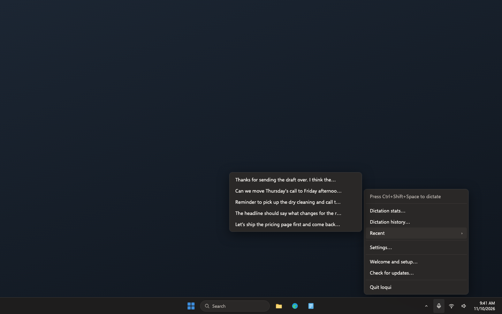

Loqui · Plan · Draft 1 · November 10, 2026
Loqui for Windows, step 3: settings, history and welcome
Everything you set or look back at on the Mac, on Windows: the welcome window, the shortcut, filler words, your dictionary, history and the Recent menu.
What approving this does. A builder adds the Windows welcome, settings and history windows and the full tray menu, all matching the Mac's behaviour in the Windows look from step 1. It accepts my recommendation below unless you change it.
Your words
November 10, to Aiva"I need you to have it spin up a plan to create a Windows version of this product."
What changes
After this step, nothing about Loqui on Windows needs a settings file edited by hand.
- A welcome window on first start. It checks the microphone and leads you to Windows' microphone switch if it's off, then ticks itself off when you turn it on. It shows your shortcut, and offers to start loqui when you sign in. The Mac's Accessibility step has no Windows equivalent, so it isn't there.
- Settings, in two tabs like the Mac. General: change the shortcut by pressing the new one, filler words, how long to keep history, start at sign-in, clear history. Dictionary: what loqui mishears and the spelling you want, with search.
- History. Every saved dictation, newest first, with search, copy and delete, and an empty state that says how to start.
- The full tray menu. The shortcut and whether it's listening, Dictation stats (opens in step 4), Dictation history, Recent (your last five, click to copy), Settings, Welcome and setup, Check for updates (works in step 5), Quit.
- Your Mac settings carry over. The dictionary and filler words use the same file as the Mac, so it can be copied across.
Who it's for: public. Still a test build on the GitHub check page.
Screens, before and after
"Before" is the real Mac app, drawn from its own code with sample data. "After" is the Windows look drawn in a separate page and photographed. Desktop app, so there is no phone size. Click any picture to see it big.
Welcome


Settings, General



Settings, Dictionary


History


The tray menu with Recent
The Mac's menu isn't pictured: it lists real recent dictations.


Empty, loading, error and no permission

- Empty: history as above; Recent says "No dictations yet"; an empty dictionary says "Add words loqui mishears".
- Loading: windows open with their content; nothing here takes long enough to need a spinner.
- Error: a shortcut that would get in the way of typing (no Ctrl or Alt, and not a function key) is refused with "Use Ctrl or Alt with a key, or a function key." A settings file that can't be read is left alone and the window says "Your settings file couldn't be read, so defaults are in use", as on the Mac.
- No permission: the microphone row in the welcome window, above.
Risk
Not risky. Why: it shows and edits files on your own PC only; Clear history asks first and deletes only loqui's history file, as on the Mac.
Decisions, with my recommendation
Approving this draft says yes to each recommendation unless you change one.
1. Start loqui when you sign in
- Recommended: on by default, with a switch in the welcome window and in Settings.
- Off by default, as the Mac has it (the Mac has no such setting).
Why: Windows tray apps are expected to start with Windows, and a dictation shortcut is only useful if it's always there.
Not in this plan
- Stats (step 4) and updates (step 5): their menu items are there and open in those steps.
- Settings the Mac keeps in its file only (sentence healing words, the pause length, the cleanup log switch). They stay in the file on Windows too.
- Spoken commands ("new paragraph"): off and hidden, as on the Mac.
Checkpoints
- Pictures from Windows (GitHub): the check run shows each window light and dark, taken on the Windows machine, and an accessibility scan with no problems. MENU-01, A11Y-01
- Set it up (Windows test machine): uninstall, install the new test build. The welcome window opens; turn Windows' microphone switch off and on and watch the row tick itself. Change the shortcut to Ctrl+Alt+D and dictate with it. Add "loki" → "Loqui" to the dictionary and say "loki". WELC-01, WELC-02, SET-01, SET-02, DICTN-01
- Look back (Windows test machine): open Dictation history, search, copy one, delete one; open Recent and click one, then paste it. Set history to Off and dictate: nothing new is saved. Clear history. Restart Windows: loqui is by the clock. SET-03 to SET-05, HIST-01 to HIST-03, RECENT-01
For the agents
Build notes
- Checks to turn green: WELC-01, WELC-02, SET-01 to SET-05, DICTN-01, HIST-01 to HIST-03, RECENT-01, MENU-01, A11Y-01. Step 2's checks keep passing.
- Existing code to reuse: Mac
Onboarding.swift(rows, 1 s polling so a grant ticks off by itself, Finish only when the microphone is allowed),SettingsView.swift(what General and Dictionary hold; save writes only the fields this window owns and keeps the rest ofcleanup.json),Shortcut.swift(acceptable combinations, display text),HistoryView.swift,TranscriptionHistory.swift(retention meanings, prune on launch and on change),LoquiApp.swift(menu items, Recent: last five, one line, 48 characters then an ellipsis, click copies). - Screens: React in
windows/ui, step 1's tokens only, one Tauri window per screen opened from the tray (one instance each; reopening focuses it). Screens talk to Rust only through typed commands defined once inloqui-coreand exported as TypeScript types; screens never read files. - Shortcut recorder: pauses the global hook while recording (as the Mac does) and resumes on save or cancel.
- Microphone check: read Windows' consent state for desktop apps; "Open microphone settings" opens
ms-settings:privacy-microphone. loqui never changes the switch itself. - Start at sign-in: the per-user Run key (
HKCU\Software\Microsoft\Windows\CurrentVersion\Run), written and removed by the switch; no administrator. - Shared interfaces and owners:
settings.jsongainsstartAtSignInandonboarded(owned here). The tray menu is owned here; step 4 wires Dictation stats, step 5 wires Check for updates. - Testing without Windows: every screen also runs in a browser against a fake backend, so Vitest and Playwright (with an axe accessibility scan) run on the Mini and on Linux CI. The Windows check then opens each real window on
windows-latestand photographs it, light and dark. - Data and outside services: local files only, as above. No network.
- Can't be undone: Clear history deletes the history file, after a confirmation, as on the Mac.
- Staging and rollback: test build on the check run, as in step 2.